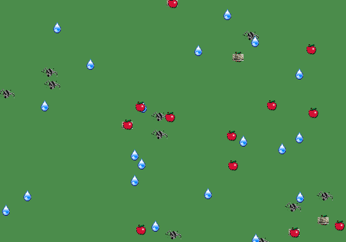

|  |
Animats con Depredador
Omar Verduga
Abel Pacheco
Alfredo Zuñiga
|
No requiere java 3d
Una version de los animats de Pattie Maes agregandole depredadores.
Animats: Los animats presentan comportamientos de hambre, sed , pereza, miedo, agresividad, evasion de obstaculos y escape de depredadores
Agua y Comida: Cada instancia en el mapa contiene una cantidad fija de nutrientes, de tal manera que los animats al consumirlos no necesariamente los quitan del mapa.
Mapa: Una cuadricula continua de 100 x 100, asumiendo que si salen de una parte de la pantalla ingresan a la misma por la otra seccion